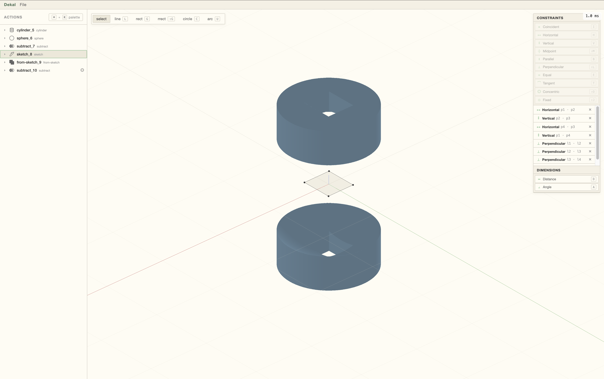

Fast mechanical design iteration.

Traditional BRep CAD was designed for precision, not speed. Models take time to rebuild and often break when topology changes.
We need a new approach for rapid design iteration.
By using implicit modeling, Dekal can generate unbreakable parametric geometry instantly. Implicit models are robust against topology changes and are generated through parallelizable compute.
Because the model is ultimately a mathematical function, it can easily be generated by AI and optimized using the same techniques commonly used in machine learning to train AI models.
What does modeling using implicits look like?
Implicit models are generated through a series of operations, similar to a feature tree in conventional CAD.
Each new step refers to a previous step but can't refer to a feature of the generated model itself.
For example, you can't select a specific edge to be chamfered. At least not yet...
What are the design areas where implicit modeling shines?
Here are some examples:
- Early in the product development phase when a large number of potential design implementations need to be generated and evaluated
- For complex structures that are manufactured through additive manufacturing
- For the generation of manufacturing tooling
What are the domains where implicit modeling is less effective than conventional "BRep" CAD?
Implicit modeling is typically less effective during the detailed design process. For example, specific design for manufacturing modifications are difficult to produce since you can't select specific features on the model itself.
What user interface does Dekal provide?
Dekal offers a conventional visual design workbench as well as a scripting interface to generate models through code.
Can I generate models using AI / LLMs?
Yes, thanks to robust topology and the code being the entire source of truth, implicit modeling is particularly well suited to be generated through AI.
Does Dekal have a constraint solver?
Yes, Dekal offers both a conventional sketch constraint system as well as 3D constraint system heavily inspired from robot kinematics design. See the demo here.
What files can I export? Does Dekal support STEP files?
At the moment Dekal can only export meshes. STEP files will be reserved for the future.
How can I simulate my design?
For the moment, you can export a mesh and load it into any simulation program.
Why is it called "implicit"?
In conventional CAD, the model is stored as a series of 2D surfaces within the 3D space.
Even without the feature tree, you can still visualize and store those surfaces by themselves.
In Implicit modeling, the only way to view the model is by evaluating the function that defines it.
There is no other source of truth for the model other than this function.